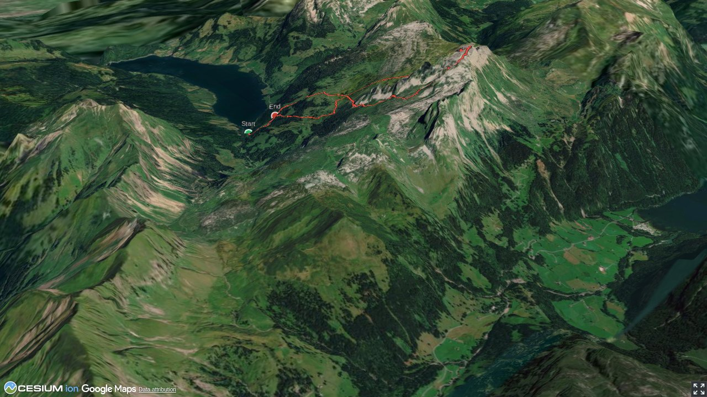

If on the way to Mutteristock you hike past Lufthütte, you will never guess what the small, unobtrusive building hides in the cellar: the entrance to a 1300 metre-long cave system spreading out under the Rederten alp. The whole area has more and even larger caves. With more than five kilometres explored, Lachenstockhöhle is the largest cave of Wägital.
Quick Facts
| Summit elevation | 2294 m |
|---|---|
| Difficulty | SAC T4 Alpine hiking with exposure, rougher terrain, and sections that are not suitable for beginners. Guide |
| Trailhead | Wägitalersee, Hinterbruch |
| Region | Northern Alps |
| Canton | Schwyz |
| Distance | 8.1 km (loop) |
| Total ascent | ~1376 m |
| Elevation range | 917-2293 m |
| Route sources | SAC Route Portal |
| Route author | Remo Kundert (via SAC Route Portal) |
Photos

Ascending to the Mutteri alp (centre of the picture)
© Remo Kundert
From 1850 m the ascent is in this valley.
© Remo Kundert
The uppermost stretch is characterised by rock bars, ...
© Remo Kundert
... which turn out to be less difficult than they appeared.
© Remo Kundert
Between Torberglücke and the summit you will meet a marked trail.
© Remo Kundert
From the summit (centre of the picture) the descent looks uninviting.
© Remo Kundert
The rock bars can easily be bypassed.
© Remo Kundert
The following talus is fairly stable.
© Remo Kundert
Back to grassy terrain
© Remo Kundert
From Matt, view back to the ascent route
© Remo KundertPhotos: Remo Kundert — via SAC Route Portal
Planning
i
i
sac_scale (precise T1–T6) with
swissTLM3D Wanderwegart
fallback where OSM is silent (coarser T2/T3 and T4+ buckets).
Coverage: OSM 71.7% · swisstopo 0.0% · unknown 26.3%.Elevations computed from the inlined GPX track (SwissTopo height API).
Loading forecast…
Start: Wägitalersee, Hinterbruch (917 m)
Route returns to Wägitalersee, Hinterbruch.
3D Terrain View

Route Details
Mutteristock from Wägitalersee
- Hinterbruch – Mutteri 2 h Mutteri – Mutteristock 1 h 30 min Mutteristock – Hinterbruch 2 h 30 min
Terrain & safety
Ascending to Mutteristock requires the use of your hands to scramble the various obstacles. There are a number of (unexposed) variants to choose from. The descent is on two rock barriers, which offer good holds. As there is a lot of loose gravel on the ground, the risk of falling rock is to be considered. It can be caused by the many ibex roaming the steep terrain.
Source: SAC Route Portal
Field Reference
| Trailhead | Wägitalersee, Hinterbruch | 47.06660, 8.91350 |
|---|---|---|
| Summit | Mutteristock (2294 m) | 47.04871, 8.94280 |
Coordinates are WGS84 decimal degrees (lat, lon). Emergency: 112 (general) or 1414 (Rega air rescue). Page URL: